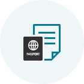

Procédures d’enregistrement réduites ! Préparez vos voyages en toute tranquillité !
Enregistrement sur Internet / Mobile
Vous gagnerez du temps, et serez plus détendu dès votre arrivée à l’aéroport.
Fonctionnement
| Éligibilité | Itinéraires | Phase d’enregistrement |
|---|---|---|
| Les passagers voyageant sur des vols Korean Air détenant un billet électronique valide | Tous les itinéraires |
|
- (Référence 1) Vols à destination/au départ des États-Unis, du Canada, du Royaume-Uni et de Paris : De 24 heures à 1 heure avant départ
- Les conditions appliquées à l’enregistrement sur Internet/mobile (Cliquez sur le lien suivant pour confirmer)
 Prévoyez suffisamment de temps pour procéder au contrôle de sécurité et aux autres formalités (toutes les formalités doivent être accomplies 1 heure avant le départ pour les vols internationaux et 20 minutes avant le départ pour les vols intérieurs).
Prévoyez suffisamment de temps pour procéder au contrôle de sécurité et aux autres formalités (toutes les formalités doivent être accomplies 1 heure avant le départ pour les vols internationaux et 20 minutes avant le départ pour les vols intérieurs).
Comment procéder à l’enregistrement

-

Step 1 Rechercher une réservation
- Les formalités d’enregistrement sont simplifiées si vous avez saisi un numéro de voyageur fréquent lors de votre réservation.
- Si la réservation n’est pas affichée, veuillez saisir le numéro de référence de la réservation ou le numéro de billet, puis la date de départ et le nom du passager.
Vous pouvez lancer l'enregistrement Web en saisissant le numéro de réservation, la date de départ et le nom du passager si vous n'êtes pas un membre non membre de l'enregistrement dans la zone de réservation des billets de l'écran principal de la page d'accueil.
-

Step 2 Saisir les informations figurant sur les documents de voyage (vols internationaux)
- Les informations figurant sur le passeport et tout autre document de voyage doivent être saisies attentivement et sans faute. Il est possible que l’enregistrement vous soit refusé en fonction des résultats de présélection de la ville de départ/arrivée si les informations saisies ne sont pas conformes.
- L’option Enregistrement mobile vous permet de saisir facilement les informations figurant sur votre passeport à l’aide de la fonction de numérisation des passeports.
Les informations de passeport telles que la nationalité, le pays / la région de délivrance du passeport, le numéro de passeport, etc. peuvent être entrées dans l'écran de saisie des informations sur le passager de deuxième étape au moment de l'enregistrement sur le Web.
-

Step 3 Sélectionner un siège
- Sélectionnez votre siège préféré.
- Connectez-vous avec votre identifiant (ou mot de passe pour les non-adhérents) si vous souhaitez changer votre numéro de siège. (Attention, les données SKYPASS doivent être sauvegardées avant de se connecter.)
Enregistrement Web Étape 3 Vous pouvez vérifier les informations de chaque siège, telles que le numéro, l'emplacement et les caractéristiques du siège, puis sélectionner le siège souhaité dans l'écran d'attribution des sièges.
-

Step 4 Procéder à l’enregistrement
- Cliquez sur « Afficher/Imprimer la carte d’embarquement », pour chaque passager, afin d’imprimer la/les carte(s) d’embarquement.
- Vous pouvez réémettre votre carte d’embarquement et annuler votre enregistrement jusqu’à la fermeture de l’enregistrement en ligne.
Enregistrement en ligne Étape 5 Dans l'écran Fin de l'enregistrement, vous pouvez vérifier l'état de l'enregistrement en ligne ou émettre votre carte d'embarquement au PC.
Formalités aéroportuaires après l’enregistrement en ligne
-

01 Enregistrez-vous en ligne et imprimer votre carte d’embarquement
- Préparez votre carte d’embarquement (mobile ou imprimée) et présentez-la à l’aéroport le jour du départ.
-

02 Arrivée à l’aéroport
Si vous possédez une carte d’embarquement
- Si vous n’avez pas de bagage à enregistrer : Muni de votre carte d’embarquement, dirigez-vous vers le concourse (hall) sans vous arrêter au guichet.
-
Si vous avez des bagages à enregistrer : Faites enregistrer vos bagages au guichet (Référence 2) réservé à l’enregistrement en ligne et dirigez-vous vers le concourse (hall).
(Référence 2) Vous pouvez rapidement et facilement enregistrer vos bagages au guichet de dépose-bagages en libre-service (D1~D17, E1~E17) à l’aéroport d’Incheon.
Si vous possédez un bon d’échange
- Récupérez votre carte d’embarquement au guichet réservé à l’enregistrement en ligne. Vous pouvez aussi faire enregistrer vos bagages tout en récupérant votre carte d’embarquement.
-
03 Contrôle de sécurité et d’immigration
- Les passagers et leurs effets personnels seront contrôlés par les services de sécurité pour assurer la sécurité des voyageurs et de l’avion.
- À l’aéroport, présentez votre passeport et vos documents de voyage en cours de validité (visa), tel que demandé par les pays de départ et d’arrivée et procédez au contrôle d’immigration.
-

04 Embarquement
- Conservez sur vous votre propre carte d’embarquement.